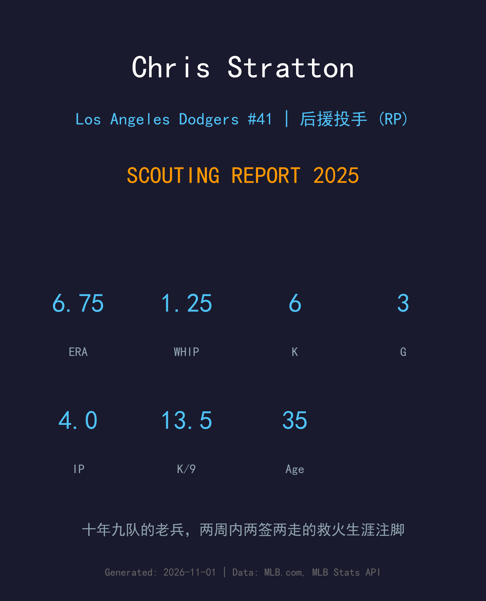
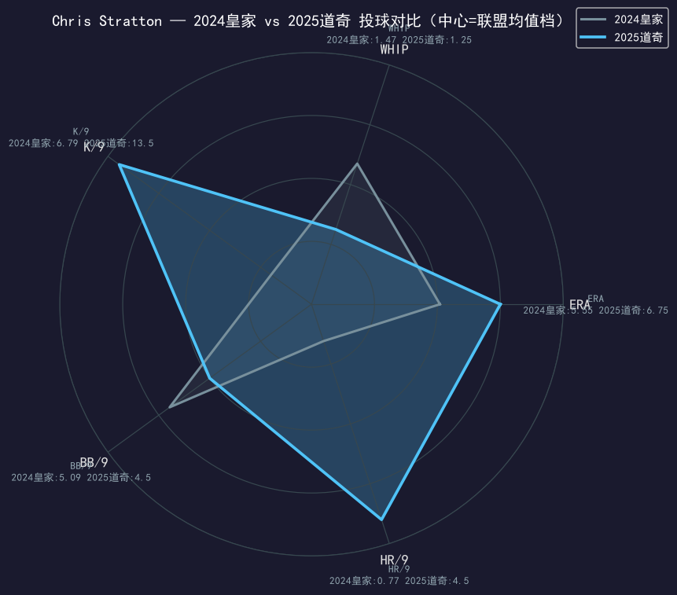
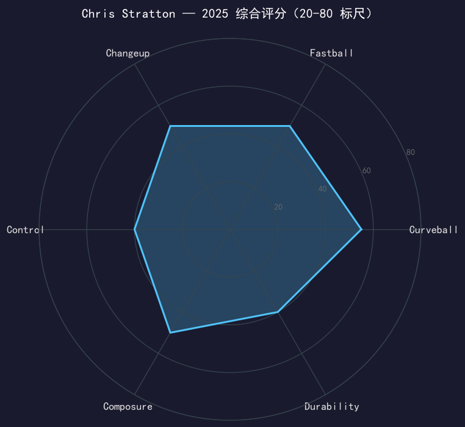

Los Angeles Dodgers #41 | 后援投手 | 右投 | 十年九队的老兵，两周内两签两走的救火生涯注脚

Chris Stratton 的道奇生涯可以精确到星期：5 月 25 日以自由球员身份签约，6 月 2 日被指定让渡，6 月 5 日被下放，6 月 6 日再签，6 月 7 日再被 DFA，6 月 9 日再下放——两周内两签两走，最终留在俄克拉荷马城直到赛季结束。大联盟段：3 场、4 局、自责分率 6.75。
数字很小，但别忘了这位 35 岁老兵的履历：2012 年首轮秀（旧金山巨人第 20 顺位），大联盟十个赛季，先后效力巨人、天使、海盗、红雀、游骑兵、皇家与道奇——2023 年还是世界大赛冠军德州游骑兵牛棚的一员。他 2025 年在道奇的 4 局里仍有 6 次三振（K/9 13.5），曲球和变速的触球 still big-league caliber——只是 2 支全垒打让 ERA 变得难看。
从 2025 年 11 月的视角看，Stratton 是典型的「最后一位进名单」型老兵：他的价值不在 4 局的数据，而在 14 年职业棒球积累的 know-how——何时热身的节奏、如何读打者报告、怎样在连投三天后恢复。这类价值在数据表上永远是隐形的，直到某支年轻牛棚在八月崩盘时才会被想起。
匹兹堡海盗时期的高光：68 场出赛、自责分率 3.63、8 次救援成功、79.1 局——从 swingman 转型为球队最可靠的后援，那也是他生涯单季最长出赛纪录。
赛季中从红雀转到德州游骑兵，22 场 3.41 自责分率——成为那支最终夺冠的游骑兵牛棚的一员，收下职业生涯第一枚也是至今唯一一枚冠军戒指。
2012 年首轮第 20 顺位被旧金山选中，2016 年登上大联盟，2018 年为巨人先发出赛 26 场、投 145 局——先发时代的巅峰，也是后来转型后援的底子。
以下为道奇段数据（2025-05-25 自由球员签约，两周内两签两走后留在 3A）：

| 赛季 | 球队 | G | ERA | WHIP | IP | SO | BB | K/9 | BB/9 |
|---|---|---|---|---|---|---|---|---|---|
| 2024 | KC | 57 | 5.55 | 1.47 | 58.1 | 44 | 33 | 6.79 | 5.09 |
| 2025（皇家段） | KC | 12 | 7.94 | 2.18 | 17.0 | 16 | 8 | 8.47 | 4.24 |
| 2025（道奇段） | LAD | 3 | 6.75 | 1.25 | 4.0 | 6 | 2 | 13.50 | 4.50 |
道奇段的 4 局是全年最好的 4 局：WHIP 1.25、保送率减半、三振率翻倍——只有 2 支全垒打把 ERA 钉在 6.75。对比 2024 年皇家时期的 5.55/1.47，他的下滑趋势真实存在（35 岁的手臂），但道奇段的触球质量说明他离「不能投了」还很远。两签两走的名单操作不是能力判决，而是道奇在 roster 数学上的取舍——他们需要的是名单位置，而他需要的是出赛量，两者在六月无法同时满足。
2025 赛季真实配球数据（MLB Stats API pitchArsenal，皇家+道奇汇总）：
使用率第一的配球地基，球速对 35 岁手臂来说维持得不错，进垒角度是他的护城河。
招牌变化球，速差 10.8 mph，用来夺好球和制造挥空——老兵的 curve 是最难 aging 的球种。
对付左打的主武器，与速球形成 6.5 mph 速差，是他能左右开弓吃局数的关键。
两好球后的追杀选项，与曲球形成「大弯+小切」的垂直变化组合。
对 Stratton 这种 35 岁老兵，4 局样本的意义不在统计而在「能力下限确认」：WHIP 1.25、三振率 13.5、曲球变速全部在线——他仍然是大联盟水平的投手，只是不再是大联盟球队愿意长期占用名单位置的投手。这两者的差距，就是 veteran 牛棚市场每年冬天的全部叙事。
道奇在两周内对他两签两 DFA，看似荒诞，实则理性：每次签约都对应一次短期牛棚缺口（伤病潮），每次 DFA 都对应缺口关闭。Stratton 每次都接受下放而不是离开，说明他清楚自己的市场位置——2025 年的他，是把「随时能到、到了能投」作为核心竞争力出售。这不是失败者的妥协，这是老兵的生存智慧。
从 11 月的视角看，Stratton 的 2026 年大概率又是一份小联盟合约加春训邀请——第十一个赛季、第八件球衣。他的曲球和变速对任何一支年轻牛棚都是免费教材，他的 2023 冠军经验对任何一支竞争者都是保险丝。只要还能投出 13.5 的三振率（哪怕只有 4 局），这份电话就总会有人打。

经验即货币的 veteran 救火员
C+ 级 / roster 边缘救火员
道奇 2025 季后赛夺冠之路：外卡 2-0 红人 → NLDS 3-1 费城人 → NLCS 4-0 酿酒人 → 世界大赛 4-3 多伦多蓝鸟。
Stratton 与这条夺冠路无关：6 月 9 日之后他就在 3A 度过余下整个赛季，包括整个十月。道奇夺冠时，他在俄克拉荷马城——那里离世界大赛很近，又很远。
Stratton 的 2026 年从春训邀请开始：第十一支球队、第八或第九件球衣。他的曲线球决定他能走多远——只要 80.4 mph 的 curve 还在夺好球，91 mph 的速球就永远够用。
理想剧本：春训挤进某队开季牛棚，投出第 11 个 MLB 赛季
现实基准：3A 待命老兵，年中填补伤病缺口
上行惊喜：成为某支年轻球队的牛棚导师兼第六局专家
Chris Stratton 来自密西西比州图珀洛，2012 年选秀首轮第 20 顺位被旧金山巨人选中——那是他职业生涯的第一份信任票，也是最高的起点。2016 年 5 月 30 日他登上大联盟，2018 年为巨人先发出赛 26 场，但先发时代的他始终未能兑现首轮秀的期待。
转型后援是他的第二次生涯：2021 年在海盗投出生涯最佳的 68 场 3.63，2022 年被交易到红雀，2023 年中再转到德州游骑兵——并成为那支世界大赛冠军队的一员。此后是皇家的一年半，再到 2025 年的道奇四月游。
2025 年 11 月的 Chris Stratton 手握一枚冠军戒指和一颗 still-working 的曲球。十年九队没有磨掉他对这项运动的耐心——两周内两签两走都能微笑接受的人，本来就是为漫长的赛季而生。